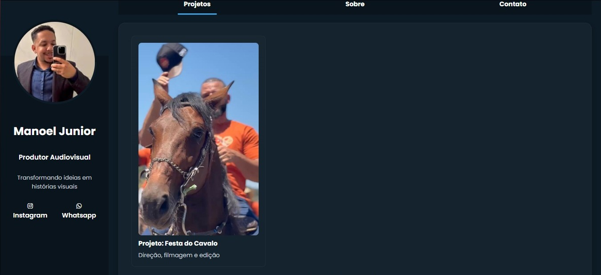
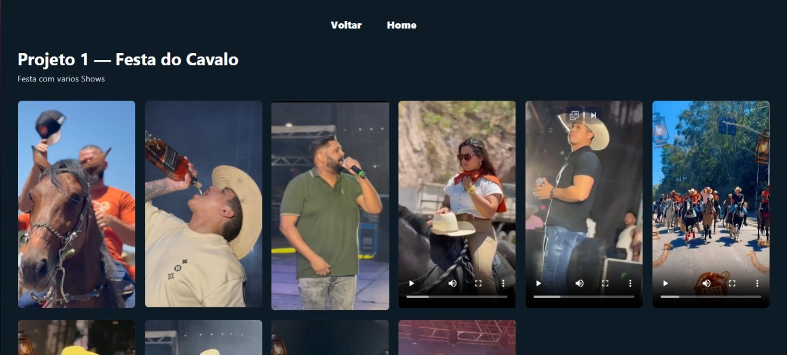

Site profissional para Produtor Audiovisual
Desenvolvimento de site profissional para apresentação de serviços, com foco em clareza das informações, contato rápido e presença digital.

Desenvolvimento de site profissional para apresentação de serviços, com foco em clareza das informações, contato rápido e presença digital.
Necessidade de presença online para divulgação de serviços e captação de novos clientes.
Criação de um site simples, objetivo e responsivo, facilitando o acesso às informações e o contato direto com o profissional.
- Layout simples e direto
- Foco em contato rápido
- Design responsivo
- Estrutura voltada para conversão

